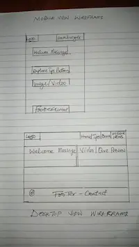

Site Name
The site is named "Christie's Health Corner" because the name helps to make the site inviting for kids, teachers, and parents who want to learn or teach healthy habits in fun and engaging way.
Site Purpose
The purpose of this website is to educate primary school children on basic health and hygiene practices, such as handwashing, brushing teeth, and eating healthy. The site will provide illustration guides, videos, interactive quizzes, and achievement badges to make learning engaging and accessible for kids, parents, and teachers.
Scenarios
These are questions that the target audience (primary school children, parents, or teachers) might ask when visiting the site:
- How do I teach my child how to wash their hands properly?
- What are some fun ways to learn about healthy eating habits?
Color Schema
The website will use bright and cheerful color palette to appeal to young children while maintaining readability:
- Primary Color: Bright Blue (#1E90FF) - Used for headers, buttons, and accents to create a friendly and engaging scenes
- Secondary Color: Gentle Coral Pink (#ff6b81) - Used for backgrounds and highlights to evoke health and vitality.
These colors are applied for consistency.
Typography
The website will use the following fonts to ensure readability and a kid friendly aesthetic:
- Font 1: Baloo Bhai - Used for headings (h1, h2, h3) to create a playful and cheerful look that appeals to children.
- Font 2: Roboto - Used for body text to ensure readability for both kids and adults.
Wireframe
The wireframe below show the layout for the homepage in mobile and desktop view. They consist of the placeholders for content without actual text or images.
Mobile View
- Header: Logo at the top, centered.
- Navigation: Hamburger menu with links to Home,Learning Tips, Quiz and Hygiene Heros.
- Main Content: A single column layout with a welcome message and a large button linking to the Tips page.
- Footer:Copyright info and contact.
Desktop View
- Header: Logo on the left, horizontal navigation bar (Home, Learning Tips, Quiz Hygiene Heros) on the right.
- Main Content: Two-column layout with a welcome message on the left and a featured video or quiz preview on the right.
- Footer: Copyright info and contact.